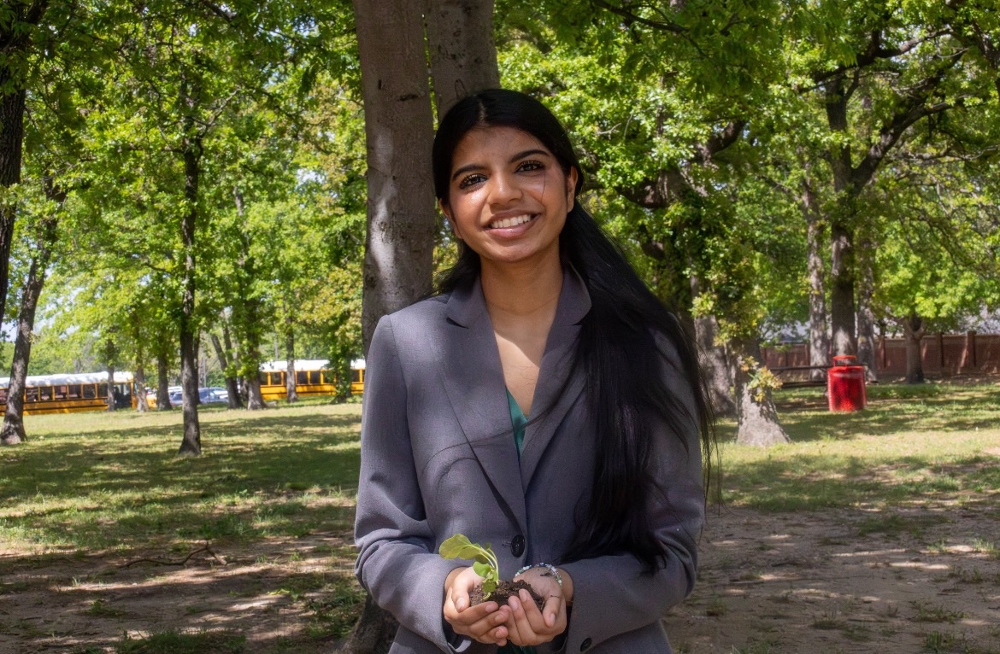
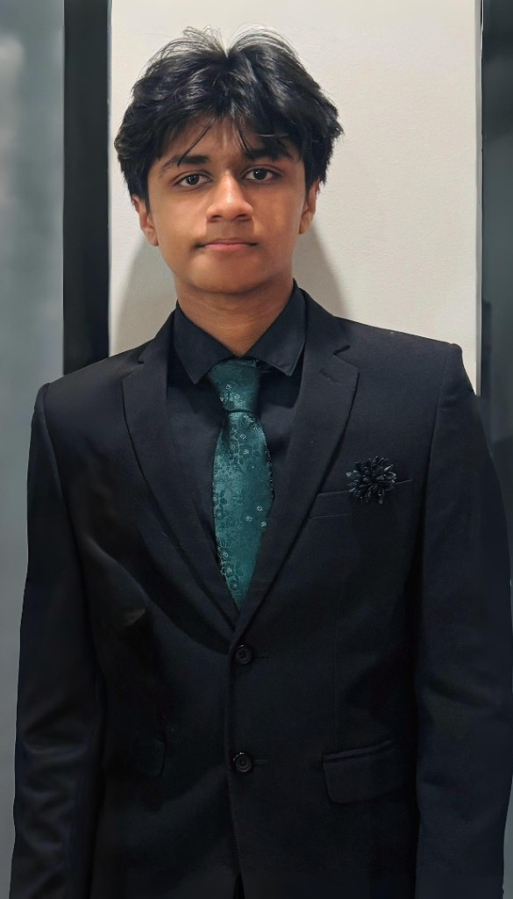
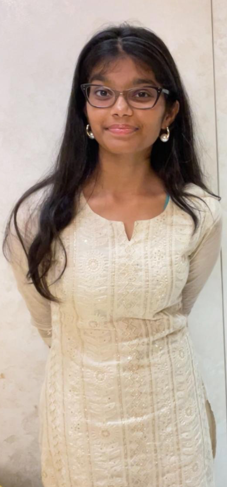
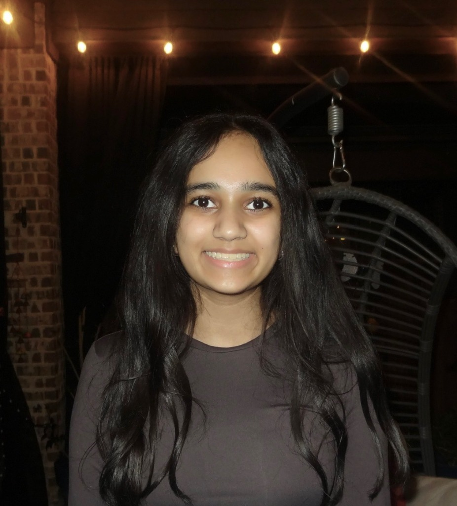

×

Name
Title
Description
Mann Nalam's executive team is entirely youth-led, reflecting our commitment to empowering young voices in philanthropy and community service. Together, they oversee programs, partnerships, and initiatives that directly support farmers and families facing crises, ensuring every effort is thoughtful, effective, and inspiring.

Co-Founder

Co-Founder

Co-Founder

Chief Operating Officer
Collaborate on initiatives that support sustainable agriculture. From outreach to on-the-ground work, you’ll help create solutions that strengthen communities and livelihoods.
Email UsDescription